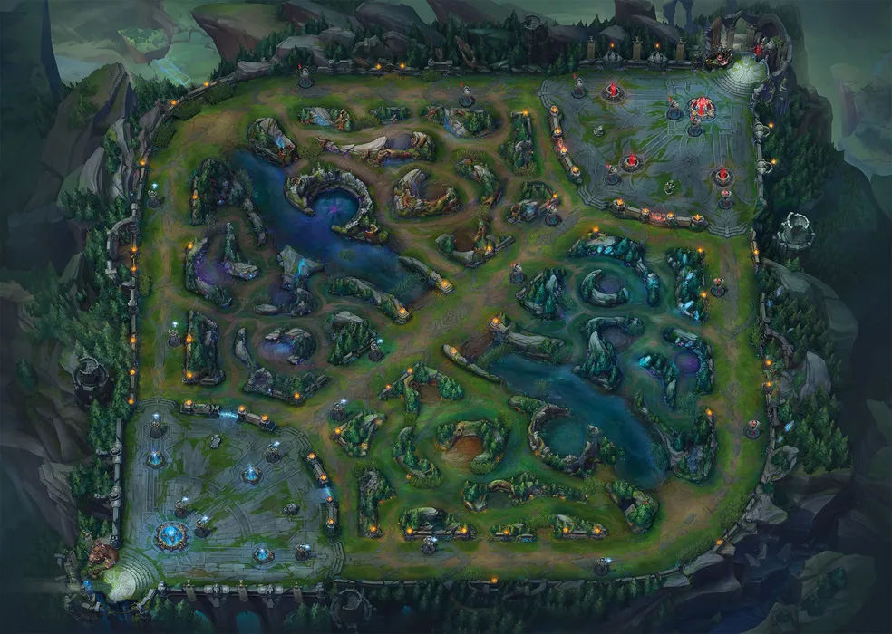
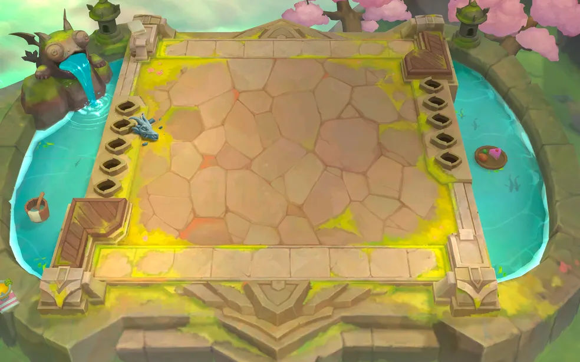

Mapas de League of Legends
League of Legends possui diferentes mapas, cada um oferecendo uma experiência única de jogo. Abaixo estão os principais mapas que marcaram a história do jogo.
Summoner's Rift (Fenda do Invocador)

Este é o mapa principal de League of Legends, utilizado nas partidas ranqueadas e no cenário competitivo. Possui três rotas (Top, Mid e Bot), além de uma selva com diversos objetivos importantes como Dragões Elementais, Arauto do Vale e Barão Nashor.
Howling Abyss (Abismo Uivante)

Utilizado no modo ARAM (All Random All Mid), este mapa possui apenas uma rota, promovendo combates constantes e partidas mais rápidas e dinâmicas.
Teamfight Tactics (Táticas de Luta em Equipe)

A Convergência é o cenário do modo Teamfight Tactics, um jogo de estratégia automática baseado no universo de League of Legends. Embora diferente do modo tradicional, faz parte do mesmo universo.